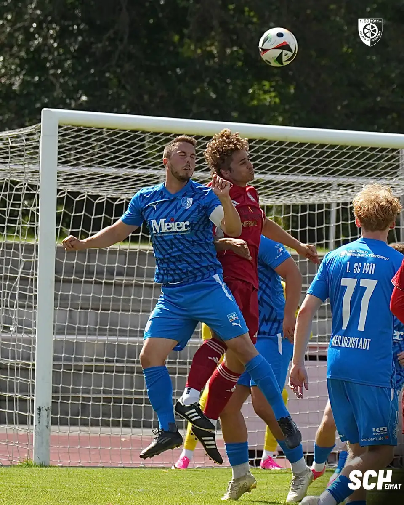
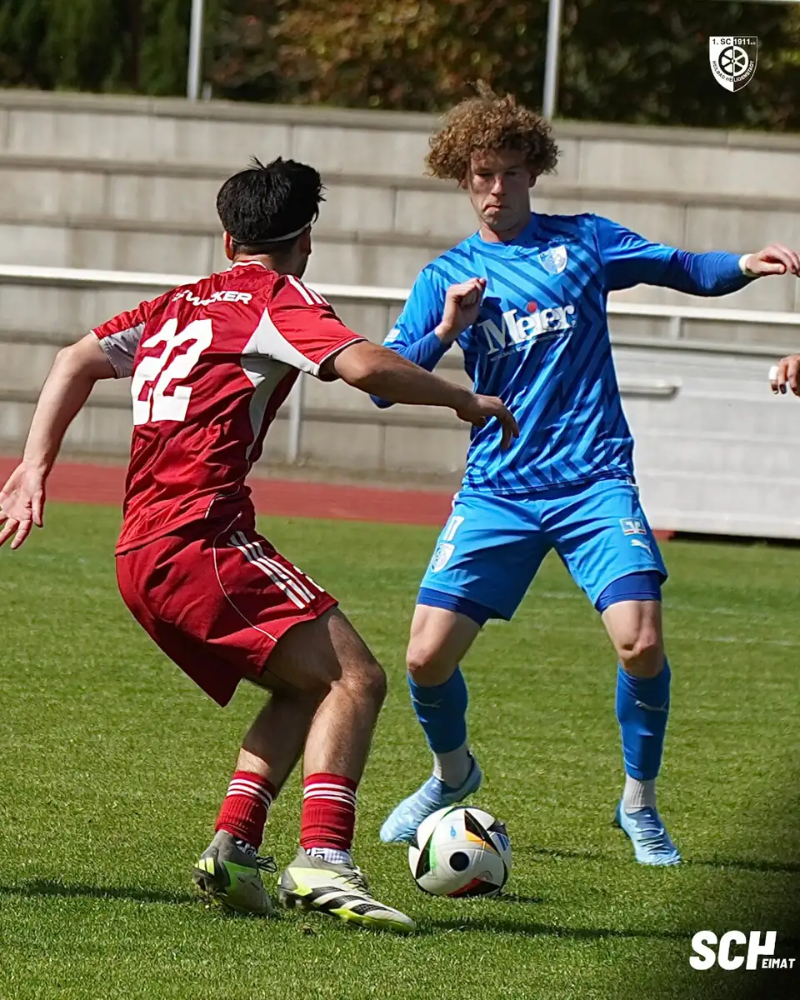
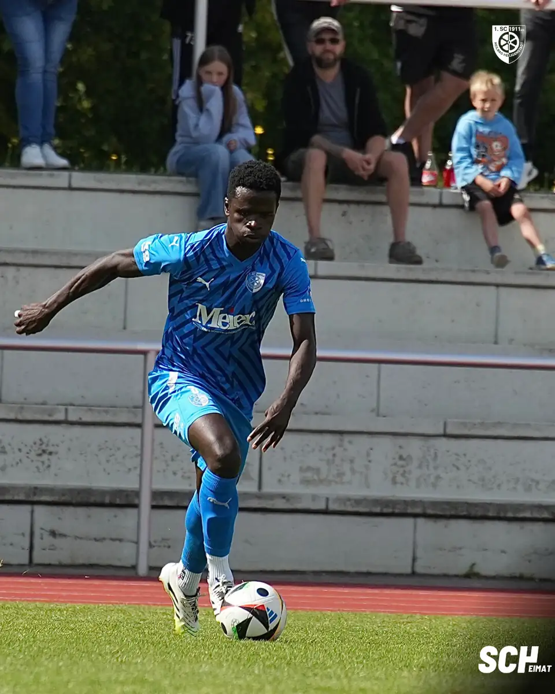
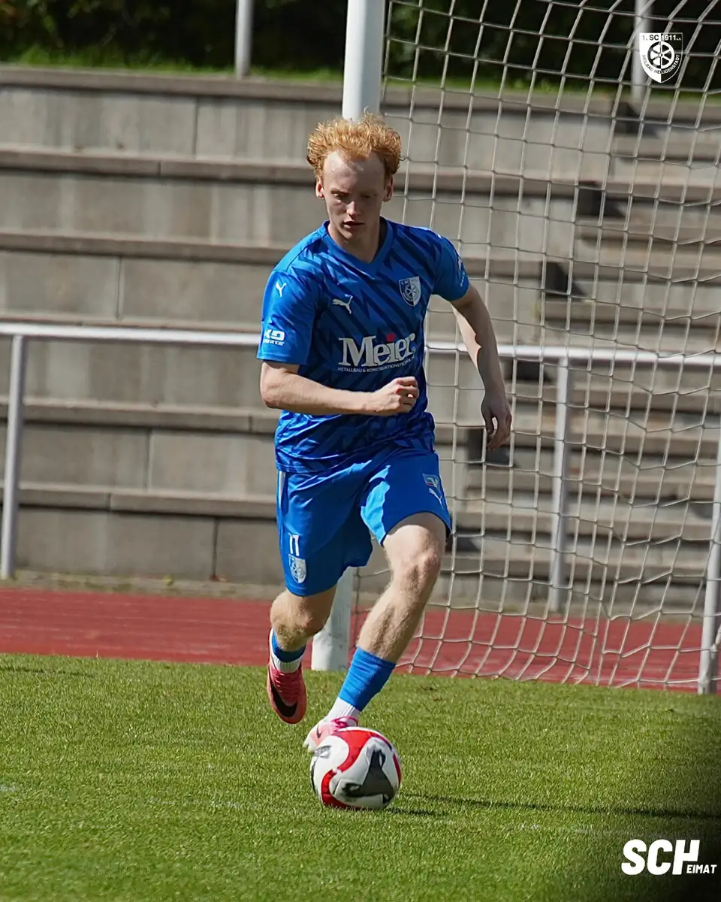
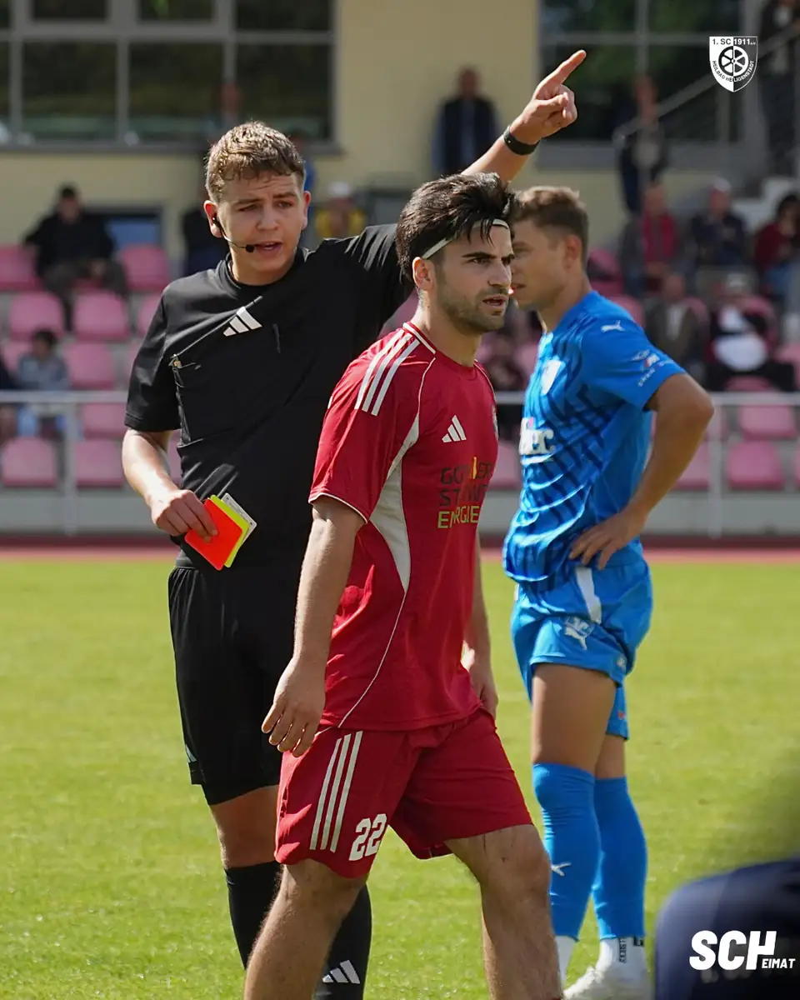
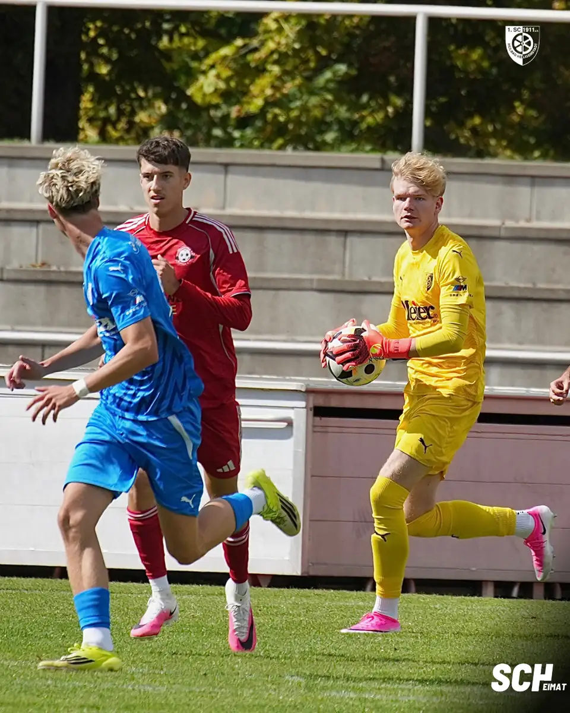
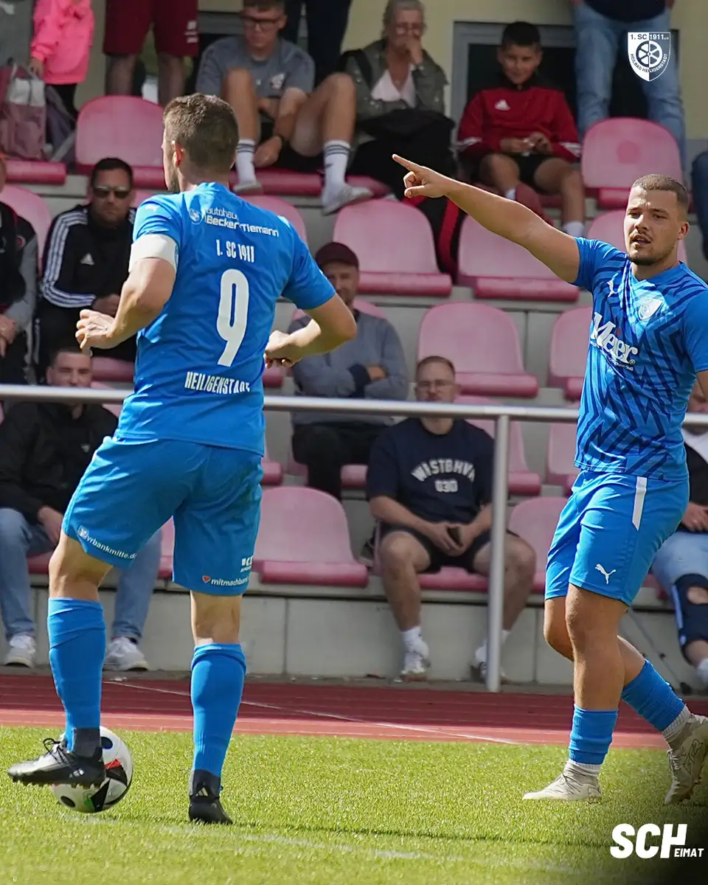
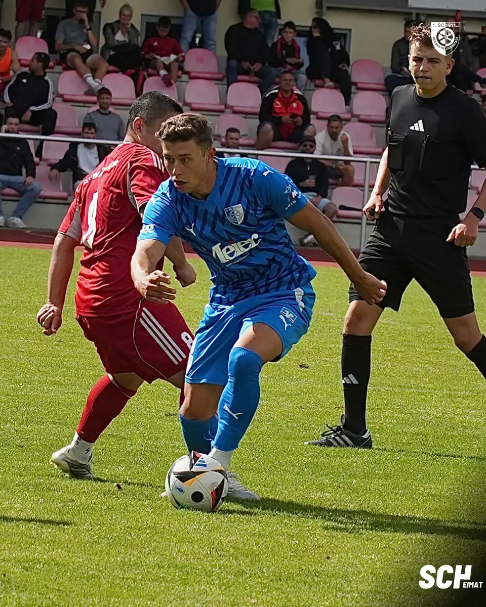
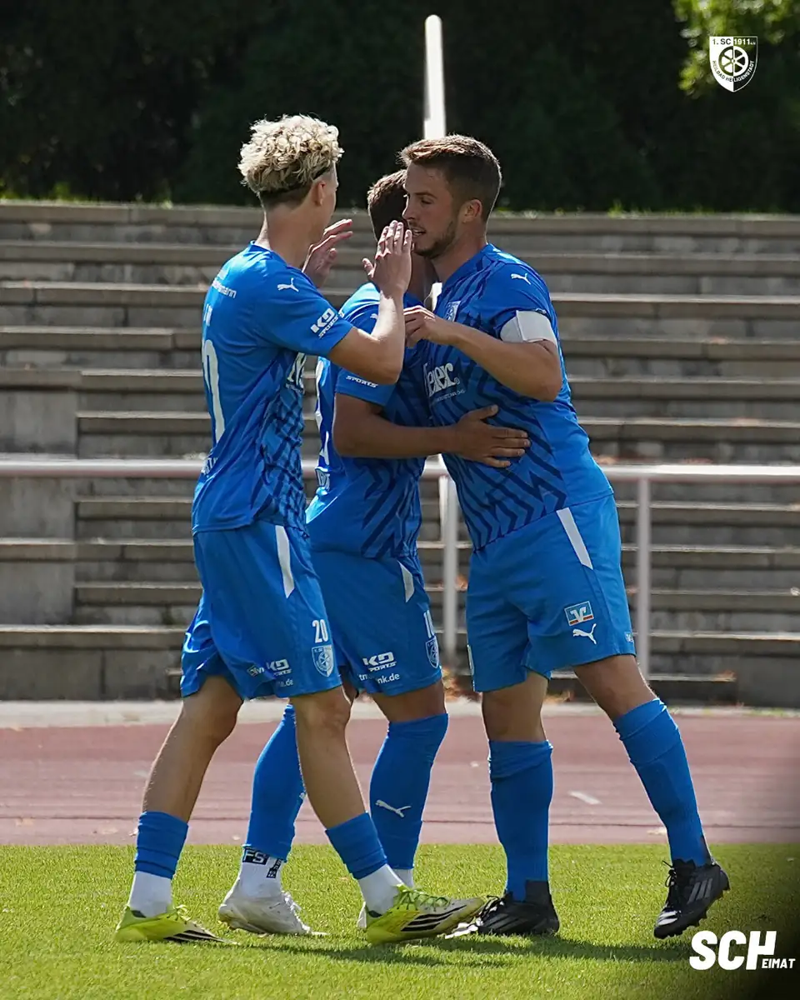

Souverän ins Achtelfinale: SCH löst die Pflichtaufgabe in Gotha
Der Pokalweg geht weiter. Mit einem 4:0 (2:0) beim FSV Wacker 03 Gotha hat unsere Mannschaft am Samstagnachmittag das Achtelfinale im Thüringer Landespokal erreicht. Maciej Wolanski stellte bereits in der 9. Minute die Weichen, kurz vor der Pause erhöhte Martin Fiedler. Im zweiten Durchgang machten Paul Opfermann und Ole Hoch den Einzug in die nächste Runde endgültig perfekt. Ein unspektakulärer, aber reifer Pokalauftritt der Ludwig-Elf, die ihrer Favoritenrolle beim Landesklassisten gerecht wurde.
Die Favoritenrolle angenommen
Auf dem Papier waren die Rollen vor dem Anpfiff klar verteilt. Der SCH reiste als Thüringenligist zum eine Spielklasse tiefer angesiedelten FSV Wacker 03 Gotha. Die Gastgeber hatten allerdings erst eine Woche zuvor mit einem 7:1 bei der SG Lauscha/Neuhaus aufhorchen lassen und sich in der ersten Pokalrunde mit 4:1 gegen den VfL Meiningen durchgesetzt. Ein Selbstläufer war deshalb nicht zu erwarten.
Alexander Ludwig musste seine Mannschaft zudem ohne Kapitän Fabian Schnellhardt auf den Platz schicken. Der Mittelfeldspieler fehlte angeschlagen. An der grundsätzlichen Zielsetzung änderte das nichts: Weiterkommen. Wie deutlich das Ergebnis dabei ausfallen würde, war zweitrangig. Genau das unterstrich Ludwig nach dem Abpfiff: „Das ist gegen unterklassige Mannschaften nicht immer ganz so einfach. Unser Ziel war, dass wir weiterkommen. Das haben wir geschafft. Es war nicht ganz so einfach.“
Wolanski sorgt früh für Ruhe
Viel Zeit ließ sich der SCH nicht. Neun Minuten waren gespielt, als Maciej Wolanski die Blau-Weißen mit 1:0 in Führung brachte. Ein Treffer zum richtigen Zeitpunkt. Statt einem möglichen langen Pokalnachmittag hinterherzulaufen, hatte die Ludwig-Elf früh das gewünschte Ergebnis auf ihrer Seite.
Gotha blieb dennoch im Spiel. Der Landesklassist hielt dagegen und sorgte dafür, dass die Partie trotz der frühen Führung nicht schon nach wenigen Minuten entschieden war. Der SCH musste geduldig bleiben und auf den Moment für den zweiten Treffer warten. Das passte zum Charakter dieser Partie. Im Pokal zählt nicht, wer auf dem Papier höher eingestuft wird. Entscheidend ist, diese Spiele mit der nötigen Konzentration zu bestreiten und dem Gegner möglichst wenig Hoffnung auf eine Überraschung zu geben. Kurz vor dem Pausenpfiff gelang unserer Mannschaft genau das.
Fiedler trifft zum perfekten Zeitpunkt
In der 42. Minute erhöhte Martin Fiedler auf 2:0. Ein enorm wichtiger Treffer, weil er unmittelbar vor dem Gang in die Kabinen für deutlich klarere Verhältnisse sorgte. Die Blau-Weißen hatten sich die nötige Sicherheit erarbeitet und konnten die zweite Hälfte mit zwei Toren Vorsprung angehen.
Dass es kein Pokalspiel wurde, in dem der SCH nach der frühen Führung sofort davonziehen konnte, bestätigte auch die Einschätzung des Trainers. Gotha machte es dem Favoriten nicht leicht. Unsere Mannschaft ließ sich davon jedoch nicht aus der Ruhe bringen.
Geduldig bleiben – und zuschlagen
Nach dem Seitenwechsel ging es für die Ludwig-Elf vor allem darum, die Partie nicht noch einmal unnötig zu öffnen. Mit dem 2:0 im Rücken musste der SCH nichts erzwingen. Die Entscheidung fiel schließlich in der 74. Minute. Paul Opfermann erzielte das 3:0 und beseitigte damit die letzten Zweifel am Einzug in die nächste Pokalrunde.
Es war jener Treffer, der aus einer guten Ausgangslage endgültig eine klare Angelegenheit machte. Der SCH hatte die Tür zum Achtelfinale bereits weit geöffnet – Opfermann stieß sie endgültig auf.
Hoch macht den Deckel drauf
Zwei Minuten vor dem Ende war Ole Hoch zur Stelle. Der Rückkehrer traf in der 88. Minute zum 4:0 und sorgte damit für den Endstand. Spätestens jetzt war der Pokalnachmittag endgültig entschieden. Vier verschiedene Torschützen standen am Ende für einen Auswärtssieg, der vielleicht nicht über 90 Minuten spektakulär daherkam, aber genau das lieferte, was in solchen Partien verlangt wird: ein klares Ergebnis und das Ticket für die nächste Runde.
Nach dem 5:2 in Siebleben in der ersten Hauptrunde folgten damit vier weitere Auswärtstore. Vor allem defensiv blieb die Ludwig-Elf diesmal konsequent und beendete die Partie ohne Gegentreffer.
Ziel erreicht – die Pokalreise geht weiter
Unterm Strich steht ein verdienter und sicherer Einzug ins Achtelfinale. Nicht mehr, aber eben auch nicht weniger. Der SCH ließ die Tür für eine Überraschung diesmal geschlossen.
Die frühe Führung durch Wolanski, Fiedlers Treffer unmittelbar vor der Pause und Opfermanns 3:0 nach 74 Minuten waren die entscheidenden Eckpunkte. Hoch setzte kurz vor dem Abpfiff den letzten Akzent.
Damit sind die Blau-Weißen unter Alexander Ludwig auch im zweiten Pokalspiel der Saison erfolgreich. Nach Siebleben ist nun auch Gotha abgehakt. Der Blick auf die Auslosung darf kommen.
Jetzt wieder Verbandsliga
Bevor das Achtelfinale zum Thema wird, geht es für den SCH zurück in den Ligaalltag. Am kommenden Samstag, 12. September, führt die Reise zum FC Thüringen Weida. Anstoß ist um 14 Uhr.
Dort bekommt es unsere Mannschaft mit einem Team aus der Spitzengruppe zu tun. Weida steht nach vier Spieltagen mit neun Punkten und 13:5 Toren auf Rang drei, der SCH folgt mit sieben Punkten auf Platz sechs.
Nach dem Pokal ist damit schnell wieder Liga.
Spieldaten
FSV Wacker 03 Gotha – 1. SC 1911 Heiligenstadt 0:4 (0:2)
FSV Wacker 03 Gotha
Büttner – Jahns (66. Heun) – Buurkhardt – Le Duc – Brinschwitz (83. Güntzel) – Radzhabov (73. Herda) – Galozy – Ramadani – El Antaki – Fiedler (73. Wolter) – Monecke (75. Heinrich)
SC Heiligenstadt
Fröhlich – Wolanski (78. Jargees Ali) – Köhler – Abdoul Aziz – Göbel (73. Opfermann) – M. Lerch – Hoch – Wilhelm (73. Aschoff) – Michalek (76. Dornieden) – Voilenko – Fiedler (77 Roth)
Schiedsrichter
Philipsen
Zuschauer
102
Tore
0:1 Wolanski (9.), 0:2 Fiedler (42.), 0:3 Opfermann (74.), 0:4 Hoch (88.)








